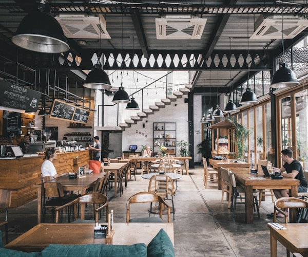

12+Tahun
Berdiri
Berdiri


Tentang Warban
Mari Nikmati
Lihat Semua Menu
Mari Nikmati
Masakan Khas Banjar
Warban hadir untuk memperkenalkan kekayaan kuliner Banjar dengan cita rasa rumahan yang autentik. Kami menyajikan hidangan khas Kalimantan Selatan dengan bahan segar dan penuh perhatian.
100% Bahan Segar
Kami memilih bahan-bahan segar setiap hari agar rasa dan kualitas hidangan tetap terjaga.
Resep Khas Banjar
Resep pilihan kami dibuat dengan bumbu khas Banjar dan cita rasa yang diwariskan dari generasi ke generasi.
Antar Cepat
Pesan secara daring dan nikmati hidangan hangat yang diantar langsung ke tempat Anda.